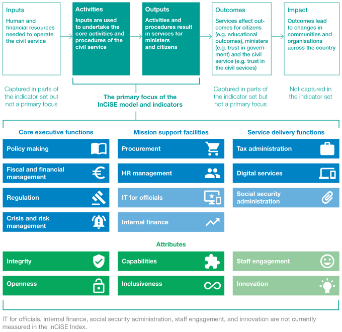

| Country | Overall data quality score | Data quality grade | Percent of metrics available | CAP | CRM | DIG | FFM | HRM | INC | INT | OPN | POL | PRO | REG | TAX |
|---|---|---|---|---|---|---|---|---|---|---|---|---|---|---|---|
| GBR | 0.757 | A+ | 100% | ||||||||||||
| ITA | 0.755 | A+ | 99% | ||||||||||||
| POL | 0.755 | A+ | 99% | ||||||||||||
| SWE | 0.755 | A+ | 99% | ||||||||||||
| NOR | 0.752 | A+ | 99% | ||||||||||||
| SVN | 0.750 | A+ | 99% | ||||||||||||
| AUT | 0.738 | A | 98% | ||||||||||||
| FIN | 0.736 | A | 97% | ||||||||||||
| ESP | 0.733 | A | 97% | ||||||||||||
| NLD | 0.731 | A | 98% | ||||||||||||
| FRA | 0.718 | A | 97% | ||||||||||||
| PRT | 0.716 | A | 85% | ||||||||||||
| DNK | 0.707 | A | 93% | ||||||||||||
| DEU | 0.701 | A | 96% | ||||||||||||
| GRC | 0.696 | B | 94% | ||||||||||||
| SVK | 0.692 | B | 93% | ||||||||||||
| HUN | 0.671 | B | 81% | ||||||||||||
| EST | 0.669 | B | 90% | ||||||||||||
| CZE | 0.659 | B | 91% | ||||||||||||
| TUR | 0.650 | C | 90% | ||||||||||||
| MEX | 0.648 | C | 73% | ||||||||||||
| NZL | 0.644 | C | 83% | ||||||||||||
| CHL | 0.643 | C | 79% | ||||||||||||
| CAN | 0.638 | C | 78% | ||||||||||||
| KOR | 0.636 | C | 78% | ||||||||||||
| BEL | 0.635 | C | 85% | ||||||||||||
| LVA | 0.628 | C | 75% | ||||||||||||
| CHE | 0.627 | C | 79% | ||||||||||||
| AUS | 0.618 | C | 71% | ||||||||||||
| LTU | 0.615 | C | 82% | ||||||||||||
| IRL | 0.614 | C | 84% | ||||||||||||
| JPN | 0.597 | D | 75% | ||||||||||||
| USA | 0.579 | D | 74% | ||||||||||||
| ISR | 0.578 | D | 72% | ||||||||||||
| ISL | 0.563 | D | 68% | ||||||||||||
| ROU | 0.529 | D | 66% | ||||||||||||
| BGR | 0.511 | D | 66% | ||||||||||||
| HRV | 0.501 | D | 65% | ||||||||||||
| Presented as Figure 2 in the original PDF publication | |||||||||||||||
2 The InCiSE framework and approach
This chapter sets out the approach taken to further develop the InCiSE framework and produce the Index, as well as country coverage issues. It also explains how the InCiSE framework has evolved and expanded since the 2017 Pilot.
A detailed explanation of the choice of indicators, their definitions, data availability and quality issues, can be found in the Technical Report.
2.1 Defining the InCiSE framework
The InCiSE framework starts by defining the core characteristics of an effective central government civil service. To do this, it assesses effectiveness based on two interrelated components:
- Functions: the core things that civil services deliver in each country (‘what’).
- Attributes: the characteristics or behaviours across every part of a civil service which are important drivers of the way core functions are delivered (‘how’).
Civil services across the world vary widely in their shape, size, and responsibilities. However, there are certain core functions they all deliver for the governments and citizens that they serve. The approach InCiSE takes is to focus on three interrelated types of core ‘functions’ to measure civil service effectiveness more comprehensively:
- Central executive functions for ministers, the effects of which are felt by citizens (e.g. policy making, fiscal management, regulation, crisis/risk management).
- Service delivery functions where central government civil services interact more directly with citizens (e.g. tax and social security administration, digital services).
- ‘Mission support’ functions which enable a civil service to do its job (e.g. finance, human resource management, IT, procurement).
By looking across all three types of function, InCiSE aims to measure how well civil services deliver the core parts of what they do.
Every civil service also has an underlying set of behavioural characteristics or traits which are important drivers of how effectively core functions are delivered, for example levels of openness, integrity and inclusiveness. These attributes should apply to all parts of the civil service and should not be limited to specific core functions.
Cultivating and displaying these attributes is commonly (though not necessarily universally) understood to be good practice. They are also key determinants of an organisation’s overall effectiveness.
There are some concepts which could be considered attributes but which are particularly relevant to some core functions.
For example, the pursuit of value for money (VFM) is a key feature of the procurement function, while the use of evidence plays an important role in effective policy making. Where feasible, these concepts have been captured through the core functions of the InCiSE framework instead.
A brief definition of each of the InCiSE indicators can be found at Annex A of this report, alongside a summary of any revisions made to each indicator since the 2017 Pilot. Further details about the InCiSE framework, can be found in the accompanying InCiSE Technical Report. A visual summary of the InCiSE framework and its context is displayed in Figure 2.1, below.

2.2 Data availability, limitations and revisions
InCiSE 2019 uses the most recently available data as at 30 November 2018. Some InCiSE metrics are collected annually, some are biennial or longer, while others are ad-hoc in their repetition. As a result, while InCiSE uses the most recently available data, some metrics may use data that does not accurately reflect the current situation.
Some measures that contribute to one of the InCiSE indicators may be relevant to other indicators as well, although this has been avoided wherever possible. No original piece of data utilised by the InCiSE model is used more than once, to ensure the overall figures are not overly reliant on a specific data source.
Most, but not all, of the indicators in the InCiSE framework have been measured to produce the 2019 Index. In the 2017 edition, eight out of the eleven core functions proposed were measured. An additional core function has been measured for the 2019 Index – procurement. However, the social security administration indicator has not been measured this time, mainly because of feedback during the pilot phase about data reliability; alternative data sources are still to be identified. For the attributes, four out of the six have been measured, as in 2017. The functions and attributes measured in the 2019 edition of the Index are illustrated in Figure 2.1.
The development of the Index has continued to involve stages where subjective judgements have had to be made, for example when aggregating the results and dealing with gaps in data. The impact of these judgements on the results is explored in the Technical Report.
2.3 Comparisons with the 2017 Pilot edition of InCiSE
It is important to note that it is not possible to directly compare scores between the 2017 and 2019 editions of the Index. The InCiSE project aims to develop an Index that in due course can be compared over time. However, the Index remains in its infancy and a number of methodological differences mean that any comparison between the first two editions is not feasible. For example, in the 2019 edition the number of metrics has increased substantially, a new indicator for procurement has been included, and country coverage has expanded as well. It is hoped that, as the methodology stabilises, capacity can be built in to compare results over time. A more detailed discussion of this issue can be found in the Technical Report.
Data collection plans by other organisations may help to fill some of the remaining gaps in future. In other areas additional data collection may need to be initiated to measure the relevant indicator. The project will seek to close these data coverage gaps as InCiSE evolves.
2.4 Data sources
A wealth of data underlies the 12 indicators measured so far. Each indicator has one or more broad themes which are then assessed via a specific set of metrics.
Most of the 76 metrics in the 2017 Pilot have continued to be used in the 2019 model. Of the 70 metrics in the 2017 Index that are directly comparable to the 2019 edition, 33 have had updates which have been incorporated in the InCiSE model. A further 46 metrics have been incorporated, bringing the total number of metrics to 116.
A detailed summary of the data sources used by the InCiSE Index is provided at Annex B. Further details on how these data sources have been developed to measure each indicator are available in the Technical Report.
2.5 Country coverage
The extent of country coverage is reliant on the availability of a wide range of datasets and collections. This continues to vary considerably from country to country and across regions. The 2017 Index covered 31 countries – all OECD members – and the data availability threshold for their inclusion was set at 75%. At the time it was judged that expanding the range of countries too quickly would require a large amount of data estimation, a reduction in the scope of the framework, or greater reliance on civil service proxy indicators, all of which could undermine the results.
Following a review of the pilot phase, the 2019 Index has been expanded to cover 38countries. This has been achieved principally by developing a more nuanced way to consider the variation of data availability and quality to determine which countries should be included. The 7 new countries are: Bulgaria, Croatia, Iceland, Israel, Latvia, Lithuania and Romania. All 31 countries in the 2017 Index have been included in the 2019 version.
Further details about the new country coverage assessment method, as well as all data quality scores, can be found in the Technical Report.
2.6 Variations in data quality by country
For most indicators, all 38 countries have generally good data quality. However, for 4 indicators (capabilities, crisis and risk management, digital services and procurement) a small number of countries have no available data at all. The UK achieved the highest overall data quality score, followed closely by five other countries – Italy, Poland, Sweden, Norway and Slovenia.
Missing data has been estimated through statistical simulation (using a method called multiple imputation). Countries with more missing data points inevitably have a larger proportion of estimated metrics and this factor should be borne in mind when interpreting results. Further details about this methodology can be found in the Technical Report.
Table 2.1 highlights the availability of InCiSE metrics for all countries in the 2019 Index, data availability for each of the 12 indicators measured and where data has been estimated.
- Green rating icon
- Amber rating icon
- Red rating icon
- X rating icon